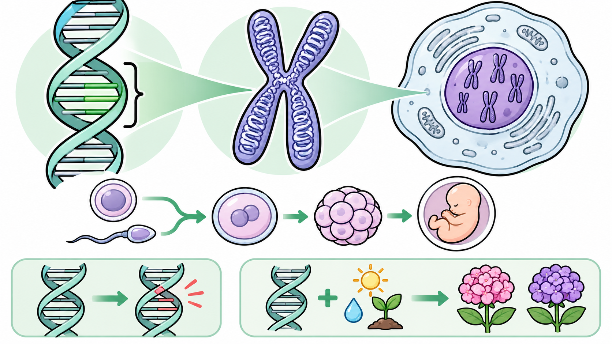

Как хранится и передаётся наследственная информация
Почему дети похожи на родителей, но не являются их точными копиями? Ответ связан с ДНК, хромосомами и передачей наследственной информации от поколения к поколению.
Начать изучение →
Где хранится наследственная информация?
Наследственная информация — сведения об особенностях строения и функционирования организма, которые могут передаваться от родителей потомству. Основной носитель этой информации — ДНК (дезоксирибонуклеиновая кислота).
ДНК
Длинная молекула, последовательность участков которой содержит наследственную информацию.
Ген
Участок ДНК, содержащий информацию для образования определённого функционального продукта — РНК или белка.
Хромосома
Структура из ДНК и связанных с ней белков. Одна хромосома содержит много генов.
Как информация передаётся потомству?
В большинстве клеток тела человека обычно находится 46 хромосом — 23 пары. В половых клетках (яйцеклетке и сперматозоиде) обычно содержится по 23 хромосомы.
Хромосом в большинстве клеток тела человека (двойной набор).
Хромосомы яйцеклетки и сперматозоида при оплодотворении.
Хромосом в образовавшейся зиготе при обычном наборе.
Оплодотворение — слияние половых клеток. В результате образуется зигота — первая клетка нового организма. Она получает наследственную информацию от обоих родителей, затем делится, давая начало развитию организма.
Что происходит при изменении генетического материала?
Изменения последовательности ДНК называют генетическими вариантами; некоторые из них — мутациями. Изменения могут возникать в отдельных генах или затрагивать хромосомы. Большинство изменений не приводит непосредственно к заболеванию, однако некоторые могут нарушать работу клеток или повышать риск определённой болезни.
Изменение гена
Может повлиять на образование или работу белка. Например, отдельные наследственные болезни связаны с изменением определённого гена.
Изменение хромосом
Иногда изменяется число или строение хромосом. Это тоже может влиять на развитие организма.
Как наследственность связана с условиями среды?
Гены влияют на развитие признаков, но многие признаки зависят сразу от нескольких генов и условий среды. Поэтому наследственная информация не определяет каждую особенность человека неизменно и независимо от внешних условий.
Наследственная основа
Гены участвуют в формировании особенностей организма, например наследственной предрасположенности к определённым заболеваниям.
Влияние среды
Питание, условия жизни, физическая активность, обучение и другие факторы могут влиять на проявление ряда признаков.
Самопроверка
Выберите мысленно ответ, затем раскройте пояснение.